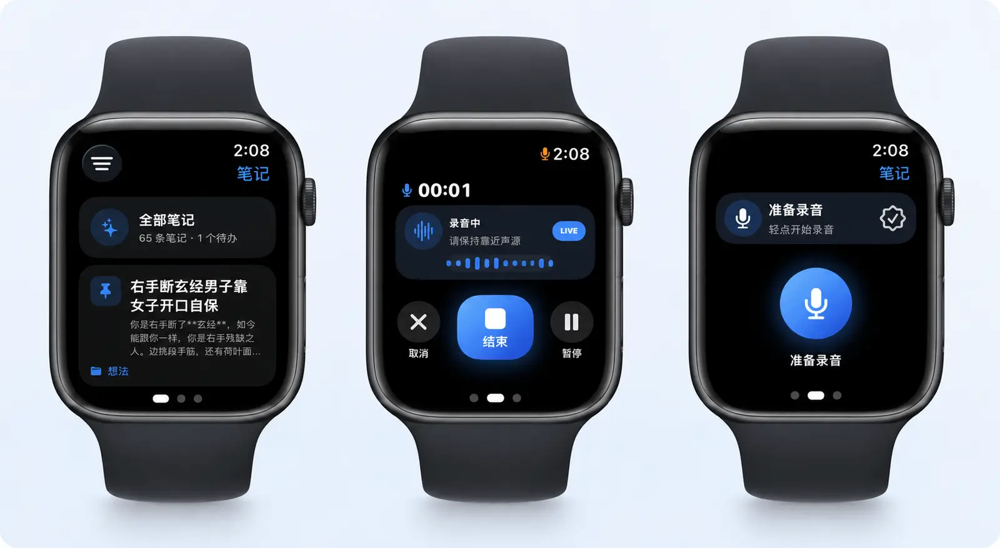

手表与手机快速记录
适合走路、开会、睡前、通勤时记录灵感，减少打字打断。
闪念把语音、图片和零散想法整理成清晰笔记、待办、摘要和结构。手机上随手记，电脑上继续写，多端协同不打断思路。
从腕上捕捉到桌面整理，闪念在你常用的设备上保持同一套笔记。
手表端和移动端适合随时记录，桌面端适合整理、搜索和深度编辑。当前安装包版本为 1.0.18。
适合随时语音记录、卡片浏览、标签筛选，并在 iPhone、iPad 和 Apple Watch 上同步灵感。
前往 App StoreAPK 安装包，适合安卓手机快速记录语音、查看笔记卡片和同步工作内容。
下载 Android APK在电脑上处理会议笔记、长文本整理、搜索归档，让桌面工作流更完整。
下载安装版 (Setup) 下载便携版 (Portable)桌面端适合在 Mac 上写作、归档、管理分类，并和移动端保持同一套笔记。
下载 macOS 版适合 Linux 工作站用户在本机整理笔记、沉淀想法和处理长篇语音内容。
下载 DEB 版 下载 AppImage 版Apple Watch 随 iOS 安装；Windows 提供 Setup / Portable；macOS 为 arm64 DMG；Linux 提供 DEB / AppImage。首次安装遇到系统提示？查看 完整下载与安装指引。
通过 Waffo 安全收银台完成支付，会员权益会自动同步到你的所有设备。
正在加载 Waffo 正式环境价格…
通过 Waffo 安全收银台完成支付。自动续期订阅可随时取消；税费与最终金额以结算页为准。详见服务条款。
Apple Watch 端支持准备录音、录音中控制和查看笔记卡片。你不用拿出手机，也能把当下的想法先保存下来。
轻点开始，适合走路、运动、临时会议等不方便打字的场景。
录音中可以暂停或结束，保留关键语音素材，回到手机或桌面继续整理。

闪念适合「先说出来，再慢慢整理」的思考方式。你只需要负责表达，剩下的交给 AI 和多端工作流。
手表或手机端快速记录想法，也可以添加图片、标签和分类。
自动转写、总结、识别待办、梳理结构，让内容从口语变成笔记。
回到电脑继续归档、搜索、编辑和复盘，把零碎输入沉淀成长期知识。
桌面端适合长时间整理与复盘
从个人思考到工作记录，从移动场景到桌面整理，闪念都围绕真实使用节奏设计。
记录讨论过程，自动整理重点、结论和待办，减少会后补笔记的负担。
想法出现时先用 Apple Watch 说出来，之后再由 AI 帮你补标题、标签和结构。
把读到的内容和自己的理解快速说下来，整理成可搜索的知识卡片。
把零散观点先收集起来，再在桌面端筛选、改写和延展成文章或方案。
闪念只专注「语音捕捉 + AI 整理」。我们不做团队协作文档，也不做复杂的 All-in-one 知识库，把精力放在更快记录、更好整理这件事上。
保护用户隐私是最重要的事。我们不会通过贩卖隐私数据获得利润；你的订阅支持产品继续做得更好。
登录后即可在网站安全购买，会员自动同步到所有设备。
会员权益在网站、桌面端和移动端自动同步。